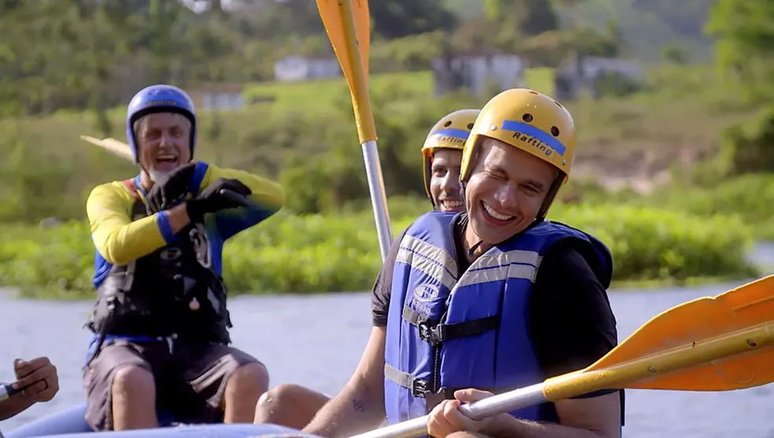

Mostraremos a você que o Rafting é mais que diversão! Viva experiências únicas e seguras conosco.



Mostraremos a você que o Rafting é mais que diversão! Viva experiências únicas e seguras conosco.
A One Day Rafting nasceu do nosso desejo pela aventura, assim iniciamos a missão de levar aventura para as pessoas cada vez mais. O nosso objetivo é revolucionar o Rafting.